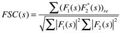
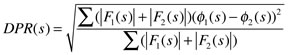

Background
The most commonly used assessment of resolution is Fourier ring correlation (FRC) in two dimensions, or Fourier shell correlation (FSC) in three dimensions:

where the sums are over all of the voxels in the shell at spatial frequency s. The resolution is reported at the furthest point where the curve drops below a threshold, typically 0.5 or 0.3.
A second measure is the differential phase residual (DPR):

where phi(s) is the phase of a structure factor.
Estimating overall/global resolution
Two reconstructions have to be generated from mutually exclusive sets of particle images:
breconstruct -v 3 -resol 15 -mult 2 -rescale 0,1 -sym D5 -recon klh_run1.pif klh_run1_sel.star
These reconstructions are then compared by FSC and DPR:
bresolve -v 7 -resol 15 -Post klh_run1_resol.ps -map klh_run1_01.pif klh_run1_02.pif.
The postscript output file contains two curves, for FSC and DPR:
Estimating shell resolution
Maps of spherical particles (such as icosahedral viruses) often show more or less detail in different radial shells. To assess this variation in resolution, two maps can be compared as follows:
blocres -v 1 -shell 20 -step 10 -max 20 -cutoff 0.3 -smooth 28_0002_7_01_b3.pif 28_0002_7_02_b3.pif
This gives an output of resolution per shell:
ImgNum Radius Resolution 0 0 25.82 0 10 30.9282 0 20 28.2701 0 30 30.0779 0 40 40.2921 0 50 143.15
Care must be taken not to make the shell width too narrow. This will introduce high frequencies giving artificially good resolution values.
Estimating local resolution
The local resolution of a map can be estimated using a local/truncated Fourier transforms of parts of the two maps. A kernel is extracted from each map and the resolution determined as usual. The kernel size should not be too small, because this introduces high frequencies that give artificially good values. A rule of thumb is that the kernel size should be about 5-7 times the expected overall resolution. The default is to calculate the local resolution at each voxel. This can take a long time. The -step option can be used to skip voxels and speed up the calculation. The in-between voxels are filled in later. An example run is as follows:
blocres -v 1 -box 30 -step 5 -max 10 -cutoff 0.3 -taper hann map_01.pif map_02.pif map_resol.map
An alternative way to speed up the processing is to use a mask limiting the calculation to a defined set of voxels. Typically a binary (hard) mask is generated so that it covers the structure of interest:
blocres -v 1 -box 30 -Mask mask.pif -max 10 -cutoff 0.3 map_01.pif map_02.pif map_resol.map
The resultant local resolution map contains the resolution estimates for the voxels selected. Where the resolution is too low, the values are set to a maximum around 200. Where no calculations have been done, the values are set to the -fill value (default 0). In cases where a subsequent symmetrization will be done (or any other form of interpolation or averaging), the best is to truncate the local resolution map to reasonable values:
bimg -verb 7 -minmax 10,20 map_resol.map map_resol_tr.map